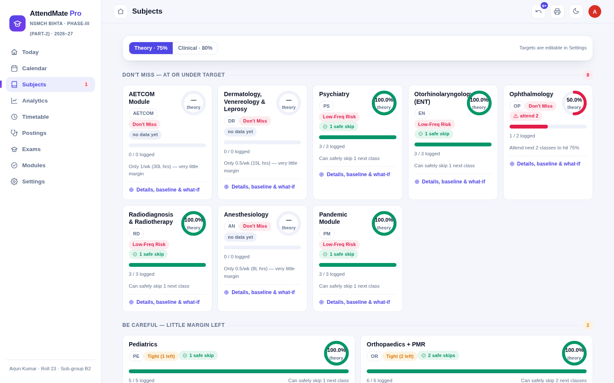
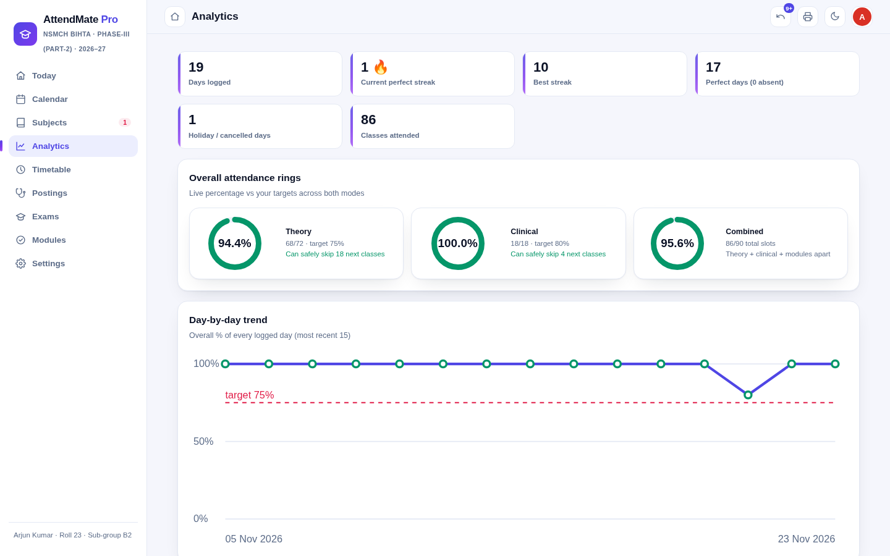

Everything the college portal doesn't tell you
AttendMate Pro is a ground-up upgrade of the AttendMate concept, grounded in the real Phase-III (Part-2) timetable, the official posting rosters and the 75% / 80% attendance rules. Here is exactly what it does.
Roster resolver
Enter your roll number (1–100) and the app maps it to one of 24 sub-groups (A1–F4), then resolves every clinical posting for the whole session: which department credits your 10 AM – 1 PM posting slot on any date, your full rotation timeline, and days remaining in each block. The rosters cover Allied Specialty (DR · RD · AN · PS), Specialty (PE · OR · EN · OP), Major Clinical (IM · SU · OG) and the final exam-oriented classes.
Safe-bunk planner
For every subject and both modes, the planner computes exactly how many consecutive classes you can miss while staying above target — and, if you are below, how many you must attend in a row to recover. It also shows the precise percentage cost of the very next miss, so "one class won't hurt" is a claim you can check before making it.
Priority advisor
With little or no data, subjects are tiered by structure: low-frequency subjects (like a 2-week posting or 0.5 slots/week) land in Don't Miss, while high-frequency majors with buffer land in Safe to Miss. As your log grows, live percentages take over and the tiers re-rank themselves every time you mark a class.
Calendar heatmap
A Monday-start month grid colours each logged day by its attendance percentage, marks Sunday holidays and dashed-border assessment windows from the official exam calendar, and shows the logged-day count, average and perfect-day streaks for the month. Tap any day to jump straight into it.
Analytics & projection
Six streak and volume stats, overall rings for theory, clinical and combined, a day-by-day trend line of your last 15 logged days against the target line, average performance per weekday, a full subject leaderboard, and a session-end projection: where theory and clinical percentages will land by the Sentup exam if your current rate holds.
Offline & recoverable
The whole site is static files — no account, no server, no network calls. Every action pushes onto a 40-step undo stack, attendance history can be bulk-filled for past dates, prior records can be imported as per-subject baselines, and one click exports a JSON backup you can re-import anywhere.
The notice board vs. AttendMate Pro
The college tells you the rules once. AttendMate Pro keeps applying them to your own numbers, every single day.
| Question | Notice board / portal | AttendMate Pro |
|---|---|---|
| "Can I skip today's lecture?" | A static 75% rule | Exact safe-skip count per subject, updated after every mark |
| "Where is my clinical posting?" | A PDF roster somewhere | Resolved for your roll number, with days-left counters |
| "How bad is my Surgery attendance?" | Nothing until reports | Live %, tier, must-attend recovery plan |
| "When are the internal assessments?" | Announced in class | Official dates on your calendar with countdowns |
| "Where will I end the session?" | — | Projection to Sentup at your current rate |
| "I made a mistake in marking" | — | 40-step undo on every action |
See the engine at work
Captured from the dashboard running on demo data (three weeks of logs, roll no. 23 → sub-group B2).


Try every feature right now
The dashboard loads with your data on day zero — no account, no setup beyond a roll number.
Open the dashboard